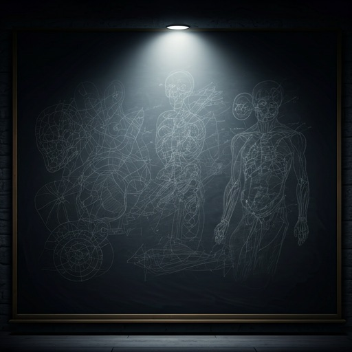
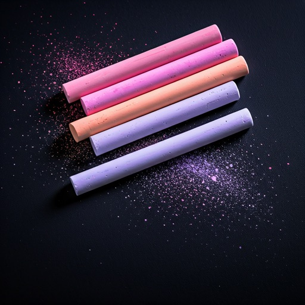
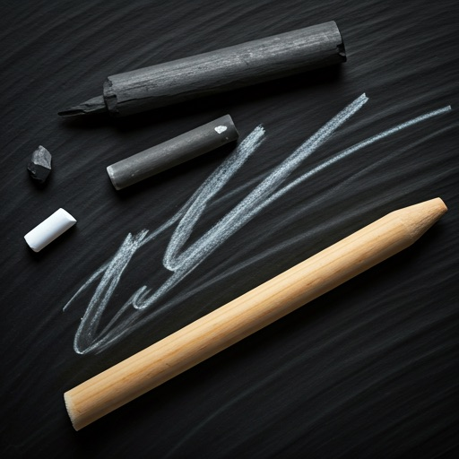
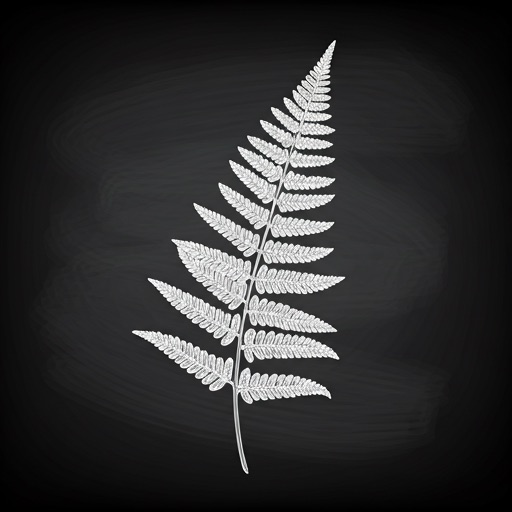
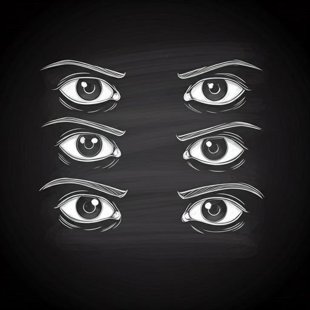
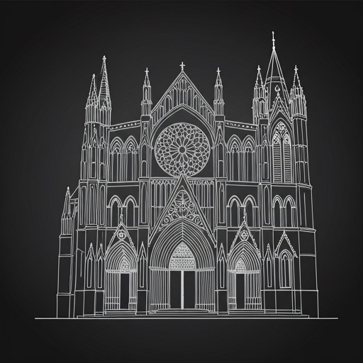

Mastering the Analog
Where dusty boards meet digital dreams. Learn the art of visual storytelling with a piece of chalk and a blank slate.
The Workshop

Perspective Basics
Learn the vanishing point fundamentals with our signature rough-sketch methodology.
Texture Theory
Simulating wood, stone, and silk using only side-shading techniques.
Drafting Light
Negative space mastery: drawing the light instead of the shadow.
Daily Lessons

Chalk Grip
Manual dexterity for varied line weights.
Gesture Work
Capturing motion with rapid, sweeping strokes.

Smudge Tones
Creating gradients with finger blending.
The Reveal
Finalizing details with sharp-edge accents.
Sketchbook

Fern Study #4

Eye Expression Grids

Cathedral Facade
Submit your work
Join the Session
Weekly tips on analog techniques delivered straight to your inbox. No digital fluff, just raw craft.
Erasable at any time.